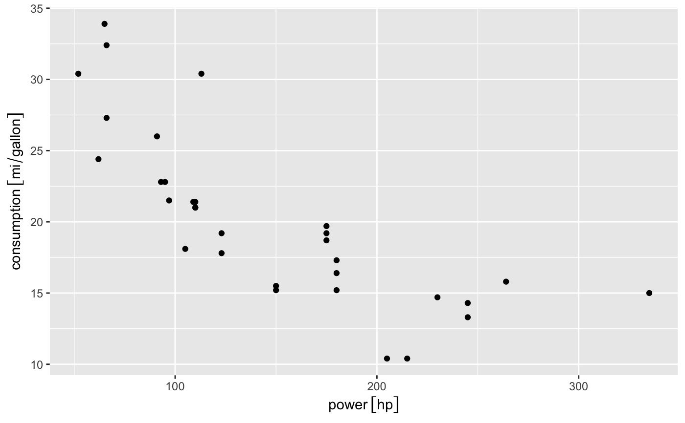
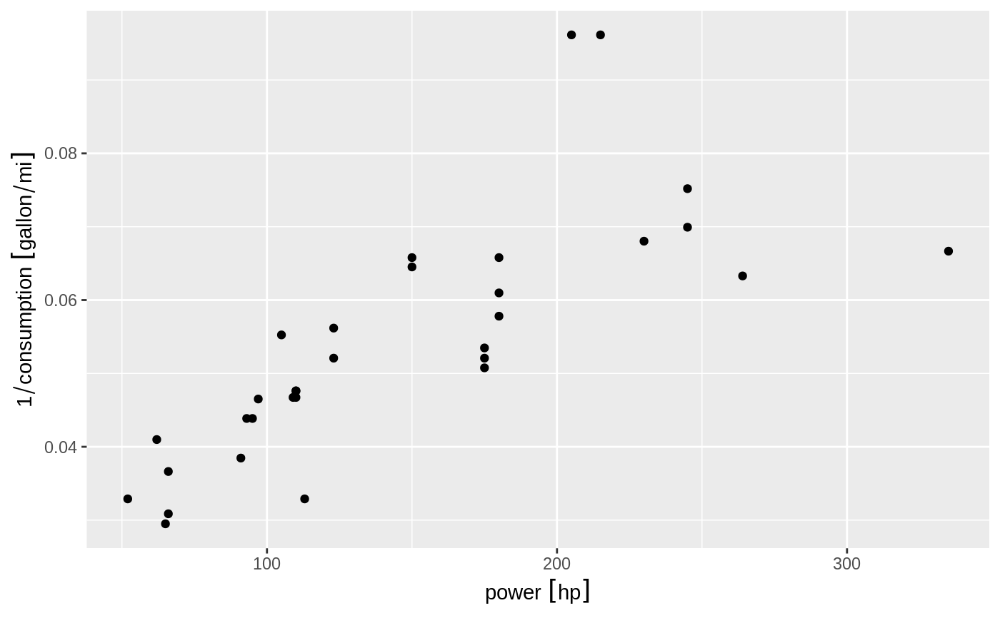
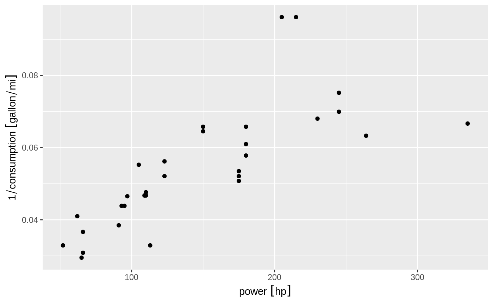

These are the default scales for the units class. These will
usually be added automatically. To override manually, use
scale_*_unit.
scale_x_unit(
name = waiver(),
breaks = waiver(),
unit = NULL,
minor_breaks = waiver(),
labels = waiver(),
limits = NULL,
expand = waiver(),
oob = censor,
na.value = NA_real_,
trans = "identity",
position = "bottom",
sec.axis = waiver()
)
scale_y_unit(
name = waiver(),
breaks = waiver(),
unit = NULL,
minor_breaks = waiver(),
labels = waiver(),
limits = NULL,
expand = waiver(),
oob = censor,
na.value = NA_real_,
trans = "identity",
position = "left",
sec.axis = waiver()
)Arguments
- name
The name of the scale. Used as the axis or legend title. If
waiver(), the default, the name of the scale is taken from the first mapping used for that aesthetic. IfNULL, the legend title will be omitted.- breaks
One of:
NULLfor no breakswaiver()for the default breaks computed by the transformation objectA numeric vector of positions
A function that takes the limits as input and returns breaks as output (e.g., a function returned by
scales::extended_breaks())
- unit
A unit specification to use for the axis. If given, the values will be converted to this unit before plotting. An error will be thrown if the specified unit is incompatible with the unit of the data.
- minor_breaks
One of:
NULLfor no minor breakswaiver()for the default breaks (one minor break between each major break)A numeric vector of positions
A function that given the limits returns a vector of minor breaks.
- labels
One of:
NULLfor no labelswaiver()for the default labels computed by the transformation objectA character vector giving labels (must be same length as
breaks)A function that takes the breaks as input and returns labels as output
- limits
One of:
NULLto use the default scale rangeA numeric vector of length two providing limits of the scale. Use
NAto refer to the existing minimum or maximumA function that accepts the existing (automatic) limits and returns new limits Note that setting limits on positional scales will remove data outside of the limits. If the purpose is to zoom, use the limit argument in the coordinate system (see
coord_cartesian()).
- expand
For position scales, a vector of range expansion constants used to add some padding around the data to ensure that they are placed some distance away from the axes. Use the convenience function
expansion()to generate the values for theexpandargument. The defaults are to expand the scale by 5% on each side for continuous variables, and by 0.6 units on each side for discrete variables.- oob
One of:
Function that handles limits outside of the scale limits (out of bounds).
The default (
scales::censor()) replaces out of bounds values withNA.scales::squish()for squishing out of bounds values into range.scales::squish_infinite()for squishing infinite values into range.
- na.value
Missing values will be replaced with this value.
- trans
For continuous scales, the name of a transformation object or the object itself. Built-in transformations include "asn", "atanh", "boxcox", "date", "exp", "hms", "identity", "log", "log10", "log1p", "log2", "logit", "modulus", "probability", "probit", "pseudo_log", "reciprocal", "reverse", "sqrt" and "time".
A transformation object bundles together a transform, its inverse, and methods for generating breaks and labels. Transformation objects are defined in the scales package, and are called
<name>_trans(e.g.,scales::boxcox_trans()). You can create your own transformation withscales::trans_new().- position
For position scales, The position of the axis.
leftorrightfor y axes,toporbottomfor x axes.- sec.axis
sec_axis()is used to specify a secondary axis.
Examples
library(units)
#> udunits database from /Users/runner/work/_temp/Library/units/share/udunits/udunits2.xml
mtcars$consumption <- set_units(mtcars$mpg, mi / gallon)
mtcars$power <- set_units(mtcars$hp, hp)
# Use units encoded into the data
ggplot(mtcars) +
geom_point(aes(power, consumption))

# Convert units on the fly during plotting
ggplot(mtcars) +
geom_point(aes(power, consumption)) +
scale_x_unit(unit = 'W') +
scale_y_unit(unit = 'km/l')
#> Warning: 'scale_x_unit' is deprecated.
#> Use 'units::scale_x_units' instead.
#> See help("Deprecated")
#> Warning: 'scale_y_unit' is deprecated.
#> Use 'units::scale_y_units' instead.
#> See help("Deprecated")
 # Resolve units when transforming data
ggplot(mtcars) +
geom_point(aes(power, 1 / consumption))

# Resolve units when transforming data
ggplot(mtcars) +
geom_point(aes(power, 1 / consumption))
